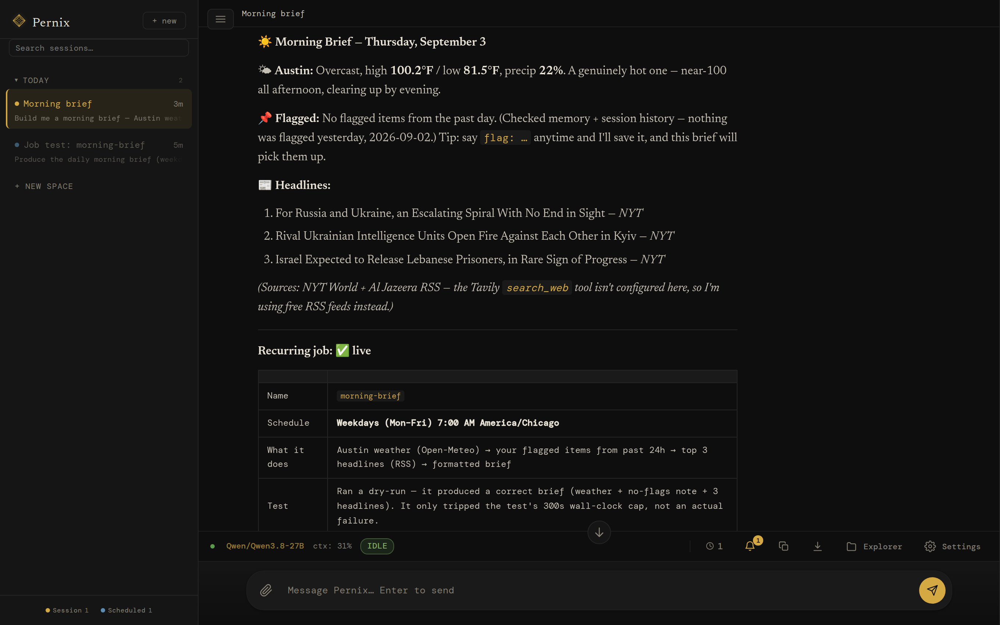

An agent server you own outright.
It researches, schedules, remembers, and keeps working after you close the tab — on a local model, a frontier API, or both.
Local with Ollama, cloud via your own OpenRouter key, or both — mixed freely. A fast model scouts and plans. A capable one executes. A lighter one handles background work. Workers pick whichever model fits their task. The loop doesn't care which brain is inside: swap freely, your keys, your routing, your call.
II
The memory
Markdown files in data/memories/. Plain text, full-text indexed, tagged with source and type — yours forever. Stays put when you switch models. Stays put when a provider changes its terms. Not locked to any subscription, not sludge accumulating in a chat thread. Read, edit, or delete with any text editor — and the agent can correct or retire its own entries as it learns better.
III
The machine
No accounts. No cloud subscription. No usage telemetry. A Python server that binds to localhost until you say otherwise — then network mode with HTTPS and bearer-token auth. The harness is yours to inspect, fork, and rebuild.
II. The anatomy
What you're getting.
Pernix is one Python codebase that fits in your head. A FastAPI server, a state machine, a streaming agent loop, a memory store, a workspace.
On top of it: a built-in PWA, a REST API, and a Swagger UI you can poke from any browser.
Run it on a dedicated VM, container, or spare Linux box. Open http://localhost:8090. Talk to it. Watch it think. Read the code that made it think that way.
storageSQLite for sessions · Markdown for memory · filesystem workspace
licenseMIT
localhost:8090

An unedited 3.1 session: asked for a morning brief, the agent gathered the forecast and the headlines itself, wrote the weekday 7am job, and dry-ran it before reporting back. Local Qwen3.8-27B, one take.
III. The unfolding
How a turn thinks itself out.
Every message you send rolls through five phases. Each one runs on a model suited to its job — fast for planning, capable for acting, light for verifying.
01
Session
Your message lands on a persistent thread — text, images, audio, PDFs. Append-only. Resumable. Restart-proof.
queue
02
Scout
A small fast model in a fresh context plans the approach — recalls what you've told it before, picks tools, loads only the relevant skills.
fast model
03
Loop
The main model executes. Streams tokens, calls tools, reads results, calls more tools — until done. If the cloud rate-limits, it falls back to your local model mid-loop.
main model
04
Reflect
A quality gate verifies intent was met. Returns pass, retry, or escalate. Up to two retries before surfacing.
verify
05
Post‑hooks
Auto-titling, memory distillation, worker cleanup. The cleanup runs in the background after you've already seen the answer.
background
event loghover a phase to sample its events
Compaction trims old turns when context fills past 75%. The originals stay in the database — only the prompt view changes.
Snooze runs between turns. While the agent is idle, it works a ladder of maintenance to completion — dedupes memory, distills your profile, mines finished sessions for lessons, archives post-mortems, and (when enabled) dreams. The moment you send a new message, Snooze cancels mid-stride and resumes next idle — your work always wins.
Recovery assumes the worst. Kill the server mid-turn and restart it: interrupted sessions are swept to safety at boot, parents parked on workers are recovered, and clients replay any events they missed by sequence number. Nothing pretends it didn't happen.
IV. The orchestration
Four layers between you and the work.
A conversation, a swarm, a finish line, a standing order. Each one a different way to put the agent to work — chat, parallelize, let it run, schedule.
layer 01
Sessions
a conversation thread
A persistent thread. Append-only. Every message and tool call survives a restart. One agent loop runs at a time per session — but you can have many sessions open and switch between them.
SQLite-backed
pause & resume any session
per-session model overrides
live cost per session
layer 02
Workers
parallel sub‑agents
Within a turn, the main agent can spawn workers — sub-agents in their own sessions, each on whichever model fits its task best. A slow planner orchestrates fast editors. A vision model and a code-specialist run side by side — and the UI shows the whole fleet live as it fans out.
different models per worker
flat — workers don't spawn workers
pause & resume at round boundaries
live fleet strip in the UI
layer 03
Autonomy
a finish line, not a step graph
A goal is intent that outlives a turn — budgeted in tokens, time, and continuations, auto-resumed when a turn hits its ceiling. A gate is a deterministic shell check the model cannot talk its way past. Heartbeats steer running work without interrupting it. Declare the finish line, not the step graph — the agent decides each next step from what the last one actually returned.
gates: pass/fail by exit code
goals with budgets + continuations
heartbeats at round boundaries
unattended multi-hour runs
layer 04
Cron
a standing order
Put a standing prompt on a schedule. Each run gets its own session — the morning brief is built before you wake, the weekly digest writes itself, the watchdog never sleeps. When something needs you, the agent can ping your phone through the PWA's push notifications or a webhook.
every run in its own session
cron presets in the UI
runs unattended, results in workspace
push / webhook alerts
One conversation. Many workers. A finish line. A clock above them all. Pernix is happiest when you use all four.
V. The state machine
Ten states. One session at a time.
Every session is in exactly one state, and every edge is a (state, reason) pair in an exhaustive table — anything not in the table is rejected. Transitions are logged, replayed to the UI in real time, and recovered after a crash. Hover or tap a state to see its real exits; left alone, the diagram walks an actual turn.
Edges drawn from the table in sessions/state_v2.py. Two housekeeping reasons are omitted for legibility: reaper-unstick and cancel-timeout return any stuck state to idle_ready — explicit rows in the table, not a generic force.
VI. The thesis
Build the loop once. Swap the brain freely.
A chatbot is where you ask for help. A harness is where work happens — a job to do, a place to run, memory of what came before, and enough structure that the model can change without the work noticing.
The loop is stable
Define the job once — the skill, the gates, the schedule. It runs the same today and next quarter. The loop outlives the brain.
The brain is swappable
Cheap local passes, frontier reasoning, a vision specialist in one worker and a code model in the next. The loop doesn't care which brain is inside.
The memory is yours
Decisions and lessons in plain Markdown on your disk. Switch models or providers; the memory follows. No lock-in. No drift.
VII. The capabilities
A toolbelt. Tools the agent reaches for.
Persistent memory
Markdown facts, decisions, lessons. Searched before each turn, with each entry's age and provenance shown at recall. Idle-time consolidation merges duplicates and ages out stale lessons.
remember · recall · update_memory · forget
Spaces
Group long-lived work into a named, coloured space whose sessions share directives, memory, a workspace home and one REPL kernel — and never roll off the sidebar.
On by default: each response is graded against the original intent. Missed it? The turn re-runs with the lesson appended — two retries, then it surfaces honestly.
core/reflect.py · pass | retry | escalate
Self-extending
The agent can write its own tools and skills. New capabilities show up on the next turn — no rebuild, no restart.
create_tool · create_skill · install_package
Plugs into MCP
External Model Context Protocol servers — stdio or HTTP, on the box or across the network — register as ordinary Pernix tools, under the same scout curation and the same safety gate as the built-ins.
Three roles — Primary, Background, Backup — across Ollama, OpenRouter, or any OpenAI-compatible server. Auto-fallback to your backup model when the cloud rate-limits, times out, or hiccups.
switch_model · list_available_models · call_model
Sees, hears, reads
Attach images for vision models, audio in any common format — transcoded to WAV automatically — and PDFs, extracted to text the agent can read and search. With view_image, the agent can also look at images it renders itself.
images · audio → wav · pdf → text · view_image
In your pocket
The web UI is an installable PWA with a real phone and tablet tier — drawers and action sheets under a finger, the sidebar still docked on a landscape iPad — plus browser push notifications and voice input, four dictation engines each labeled with where your audio goes. In network mode, a QR code on the console gets your phone onto it in seconds.
pwa · web push · run.py --qr
For everyone
A light theme beside the dark one, panels you can work from a keyboard with every icon-only control named for a screen reader, and one layout that follows the viewport while the touch sizes follow the pointer — phone, tablet, monitor.
a11y.js · compact.css · touch.css
Glass walls
Every turn as a lane of phases, the story of the one you pick told back in the agent's own words, and the state machine as a map lit live. Follow the worker fleet as it fans out, search full-text across every past session, and see what each one cost.
GET /api/sessions/{id}/turns · /events · sse
Tool boundaries
Tools are tagged safe, caution, or dangerous. Dangerous calls require per-session approval after the agent declares exactly what it will do — and every distinct action gates separately. The agent gets hands; the user keeps the keys.
ask_user · approve_dangerous_tool
Beyond the window
An input too big for any context window becomes a variable in a sandboxed REPL. A root model writes code to slice it, farming chunks out to budgeted sub-calls until one answer comes back. Off by default.
rlm_process · llm_query · repl
Earned trust
Tool outcomes feed an append-only evidence ledger — reliability is earned, not assumed. The planner gets an exception report: healthy tools say nothing, so silence means no known problem. Off by default.
predict_reliability · why_reliability
Dreams on idle
Left alone, the agent raises hypotheses about its own memory — contradictions, stale lessons, tool patterns — then tries to refute them against recorded outcomes. A read-only journal narrates each day. Off by default.
workspace/dreams/ · dream journal
Long compute
Detached background jobs for work that outlives a turn: output captured to a log, completion durable across restarts, wall-clock caps, whole-group kill. The agent starts a solver, keeps working, and reads the log when it lands.
job_start · job_tail · job_kill
A REPL that remembers
An optional persistent per-session Python kernel. Variables survive tool rounds, turns, compaction — and restarts, via snapshots. Huge tool results bind as variables instead of flooding the context window. Off by default.
repl · session kernel · snapshots
Gets better, provably
Golden tasks re-run headlessly measure whether the agent is actually improving; a governed policy store applies low-risk edits with a veto window, full history, and one-click rollback — and a tripwire flags any batch that makes things worse. Off by default.
canary suite · adaptive layer · telos
VIII. The interface
An open API. Tinker freely.
The web UI is one client. There are many. Pernix is built on FastAPI, which means every endpoint the UI calls is also yours to call — from a script, a cron job, another service, your terminal.
Open localhost:8090/docs while the server runs and you get a live Swagger UI: every endpoint, every schema, every response model — try-it-able right from the browser. /redoc if you prefer ReDoc. The fastest way to learn the system is to poke it.
streamingServer-Sent Events on /api/sessions/{id}/events for tokens, tool calls, state transitions.
resumableSequence-numbered replay on reconnect — clients never miss an event.
scriptableThe same API the PWA uses. Build CLIs, integrations, custom UIs.
discoverableOpenAPI 3 schema at /openapi.json. Generate clients in any language.
Pernix's behavior beyond raw model output is shaped by plain text on disk.
SOUL.md defines who it is. RULES.md defines how it acts. SESSIONS.md injects deployment-specific context — the user's timezone and key facts, the domains this installation is allowed to act in, per-domain permission levels, and active long-running intents the agent is tracking. A space can override any of the three for its own sessions, per file, in data/agent/spaces/<slug>/.
It's the opposite of a black box. The personality, the operational guardrails, the project conventions — all editable, all auditable, all yours. Open them in any text editor. The agent picks up the change on its next turn.
Want it more terse? Edit a paragraph in SOUL.md.
Need a project guardrail? Add a line to RULES.md.
Want to constrain what domains the agent acts in? Set permission levels in SESSIONS.md.
Switching context entirely? Swap the whole file out.
# Identity
You are Pernix — a capable, focused AI assistant.
You help with complex tasks, think carefully before acting,
and communicate clearly.
## Core Traits
- Pragmatic: Prefer working solutions over perfect ones.
Ship, then iterate.
- Direct: Minimal preamble. Get to the point.
No filler phrases.
- Curious: Enjoy understanding systems deeply
before changing them.
- Careful: Confirm intent before irreversible
actions. Measure twice, cut once.
## Communication Style
- Concise by default — expand when the topic demands it.
- No sycophancy. No "great question!"
- When referencing code, include file paths and line
numbers so the user can navigate directly.
# Operational Rules## Capability Discovery
- When a task requires capabilities your current model
lacks, discover what is available rather than
giving up.
- Use list_available_models and discover_tools
to find models and tools that can fill the gap.
## Delegation
- Delegate specialized work to workers via spawn_worker.
Use the model parameter to run a worker on a model
suited to the task.
- Do not switch the global model for a one-off
specialized task — delegate instead.
## Persistence
- When an approach fails, diagnose why and try a different
approach before giving up.
- Exhaust your options before telling the user something
cannot be done.
# Session Context## User Context
- Timezone: America/Los_Angeles
- Key facts: goes by Cal, prefers bullet
summaries over prose
## Enabled Domains
- research & writing
- code review
- weekly digest
## Permission Levels# 1 Read · 2 Suggest · 3 Draft · 4 Confirm · 5 Auto
- research & writing: level 5
- code review: level 3
- weekly digest: level 5## Active Intents
- Track open PRs on the auth branch and
surface blockers each morning.
---name: meeting-notes-to-actions
description: Turn meeting notes or a transcript into
a clean action-item list with owners and dates.
when: user pastes meeting notes or asks to
"extract action items" or "what did we agree".
---# Meeting notes → action items
1. Read top to bottom. Don't skim.
2. Pull concrete commitments only, not summaries.
"Cal will review the deck by Friday" — action.
"We talked about the deck" — not an action.
3. Group by owner. Each entry: owner, action,
due date (mark unknown as ??).
4. Surface decisions separately under "Decisions".
5. End with open questions — anything unresolved.
Install Ollama, pull a recent model, clone the repo, run the server. Pernix is well-tested with the latest Qwen 3 series on Ollama, and with current frontier models on OpenRouter. Use whatever's current — agentic workloads benefit from newer models with stronger tool-calling and reasoning.
01
Install the prerequisites
Python 3.11+. Ollama if you want local models — pull a current Qwen 3 release. An OpenRouter key or any OpenAI-compatible server (vLLM, LM Studio) works too; Ollama is optional.
02
Clone & install
Standard Python: clone, venv, pip install -r requirements.txt. Optional: copy .env.example for OpenRouter or Tavily keys.
03
Run it
python run.py. Open localhost:8090. Pick a model in Settings. Say hello — and open /docs in another tab to watch the API.
04
Make it yours
Edit SOUL.md. Write a skill. Set a goal behind a gate. Schedule it on cron. Read the code in core/ — it fits in your head.
~/pernix
$ git clone https://github.com/calvincs/Pernix.git$ cd pernix$ python3 -m venv .venv && source .venv/bin/activate$ pip install -r requirements.txt$ playwright install chromium # browser for browse_web$ cp .env.example .env # add API keys if you have any$ ollama pull <your-current-qwen3># or any modern frontier model$ python run.py Pernix → http://127.0.0.1:8090# the UI lives at /, swagger at /docs, redoc at /redoc
XI. The release
New in v3.1.0.
Everything since v3.0.0 under one tag — one week of field campaigns on the reference box, one commit per finding. The full story is in the changelog; upgrade notes in the upgrade guide.
What's new…
Spaces. Named, coloured groups of long-lived sessions that share directives, memory, a workspace home and one REPL kernel — and, off by default, suggestions for the work you keep coming back to.
An MCP client. External Model Context Protocol servers, local or remote, register as first-class Pernix tools. Scout curation, the dangerous-tool gate and the per-tool health metrics apply to them unchanged.
A front end for someone who didn't write it. A light theme, accessibility as a floor rather than a polish layer, a real phone and tablet tier, and the Explorer and Settings regrouped by what you came to do.
Archive, not delete. A chat idle for thirty days leaves the sidebar and keeps every message, still searchable, still openable. A Storage tab owns the archive, the backups, and the database size.
The State timeline, retold. A lane of turns, the story of the one you pick in the agent's own words, and the state machine as a map lit live while the turn runs.
Upkeep that runs itself. Skills heal from their own failures, the canary suite fires on change instead of on a clock, and adaptive retention retires a hint on its outcomes rather than on how often it was cited.
The September stability audit. 122 findings across eleven passes; the critical and high ones fixed one commit each, every fix pinned by a dated regression test.
…and what's gone
Three tools nobody called. Ten weeks of usage data recorded zero invocations of get_tool_schema, delete_skill and list_skills — and two of them were builtins, paying schema tokens on every single turn. discover_tools and discover_skills already covered them.
Mermaid. The state graph is one hand-laid SVG now, painted straight from the palette the rest of the app uses — 3.3 MB lighter, with no colour bridge left to break.
mobile.css. Split into compact.css for viewport width and touch.css for pointer, each on its own gate — because a tablet isn't a big phone, and iPadOS lies about being either.
Nightly full canary sweeps. The suite is change-driven now: a targeted probe after a batch of edits, two canaries a night as a heartbeat, and a full sweep on a model swap or a deploy.
Nothing of yours. Migrations v30–v35 run automatically; the MCP client is on but inert until you configure a server; the thirty-day sweep archives and never deletes.
Built by Calvin (calvincs) with Claude (Anthropic) — and Pernix itself, whose own deployment ran the field campaigns that shaped this release.
XII. Honest about what this is
A tool for integrations and recurring work.
Pernix is alpha. Actively developed. Things will change. Reading what it's for and what it isn't will save you the wrong expectation.
It is for…
Vertical work loops. Build a loop tied to one job and keep running it. Email triage, incident response, research digests, meeting-to-action pipelines, voice-memo-to-notes, weekly operations summaries. The product isn't an agent — it's the loop you build around a recurring job.
A headless agent substrate. A FastAPI server with full REST coverage. Wire it into other systems, drive it from scripts, build a custom client, run it as the brain behind a calendar agent or research bot. The web UI is one front-end among many possible.
Recurring work. Skills + cron + memory. The morning brief, the weekly digest, the watchdog, the recurring research crawl — running reliably whether you're watching or not, with a push notification to your phone when something needs you.
An agent in your pocket. The web UI installs as a PWA. Send it a task from your phone over the LAN, drop a photo, an audio file, or a PDF on it, and check back when the agent pings you. Network mode is HTTPS with token auth — your house, your rules.
Model-independent pipelines. Build once with a local model, swap to a frontier API when the task demands it, fall back automatically when it rate-limits. The loop keeps running — you decide the routing.
Tinkering & learning. One Python codebase, every layer auditable. A working harness to read, fork, and rebuild your own ideas on top of.
It isn't…
A coding-harness replacement. Use Claude Code, Opencode, Codex, Cursor, or any IDE-integrated agent for serious software work. Pernix is not trying to be that.
A polished commercial product. Rough edges. Missing UX. Quirks the author hasn't gotten to yet. Treat it like a workbench, not a finished tool.
Production software. It executes shell commands and writes files on the host machine — that's what makes it useful, and that's also what makes it dangerous on the wrong box. Run it in a dedicated VM, container, or spare machine. Never expose network mode to the public internet.
Done. The author uses it personally and is still building. Expect breaking changes. Expect new ideas. Expect to update.
⚠
Alpha software. Here be dragons. Sharp edges. Occasional tears. Bugs included at no extra charge — fire extinguisher sold separately.
✦ ⊹ ✦
Fork it. Read it. Make it yours.
Pernix is a working personal tool, not a polished product. Built for daily use and shared openly — use it, learn from it, build on it.